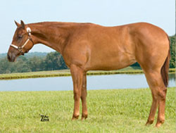

IMPULSIVE DEBUTANTE
Sired by Hot Impulse and out of Chips Debutante daughter of Ima Blister Bug. Impulsive Debutante is the dam of Some Kinda Lazy, top 10 2yr. old Congress Western Pleasure Futurity 2011.
DIAMONDS IMPULSE
Sired by the great Impulsions and out of RD Red Hot Lover. Diamonds Impulse is a multiple point earner in Western Pleasure.
CHEX SO GOOD
By Congress Top Ten placer and proven sire Zippo Pine Chex (by Zippo Pine Bar). Out of JDS So Good Im Baad, (by Zippos Mr Good Bar) full sister to So Good Im Shameless Reserve Congress Champion and NSBA High Point Champion.
CHIPALUA - Multipile Superior Producer
Daughter of Zips Chocolate Chip full sister to Chocolua, 2 Time Reserve World Champion and Congress Champion and full sister to Chips Count Chocula World and Congress Top Ten placer. Producer of Willa Be Invited and Too Sleepy To Chip. Chipalua's foals have over 1000 points. Youth and Open Superior Producer.
INVESTMENT A WARD - 2x BCF Champion Producer
Daughter of Zippo A Ward and out of Investors Skippy, Superior Western pleasure daughter of The Big Investment. Investment A Ward is the producer of a Reichert Celebration Champion and Circuit Champion. Dam of 2x BCF Champion and Futurity Champions.
GOOD SPECIAL MISS - Multiple Honor Roll Producer
1989 red roan daughter of Zippos Mr Good Bar out of Miss Special Lee, dam of a three time PHBA World Champion and a Congress Top Ten placer. Good Special Miss is the dam Personal Invite AQHA High Point Champion, Invited To A Goodbar,Honor Roll Green Trail Stallion?and dam of an APHA Reserve World Champion, Superior western pleasure earners, and a NSBA High Point Reserve Champion.
Deducted (tb)
1997 Thoroughbred mare by Tax Collection, a son of Private Account and out of a Lord Gaylord mare.
ZIPPITY GOOD BAR - Reserve World Champion Producer
1993 daughter of multiple World and Congress Champion sire Zippos Mr Good Bar and out of the proven producer Snap Your Garters. Zippity Good Bar is a full sister to Good N Tru, Superior Western Pleasure, Open ROM, Futurity Champion, and NSBA money earner. Producer of Only Because Im Good NSBA Reserve World Champion and Inovations Good Bar, multiple point earner.
SKYS SASSY ROSE
A World and Congress Top Ten placer and AQHA High Point Top Ten. By the great hunt seat sire Sky Blue Walker and sister to World Show qualifiers and Congress Top Tens. Dam of Ridinonmycoattails, top 10 Masters Hunter Under Saddle and class winner Arizona Sun Circuit.
SUMMER TEA (tb)
By the Affirmed son, Sovereignty and out of a daughter of Rock Royalty and half sister to the good producing mare Koa Lua Royale, dam of Congress Championships and World Show Top Tens. Summer Tea is the producer of Open and Youth ROM earners.
BLAZING HOT STAR - AQHA Champion and Superior Producer
Daughter of Blazing Hot, World and Congress Champion and a leading sire of western pleasure money earners. Out of Eternal Starrific, AQHA point earner and paternal sister to Reserve World Champion Dont Skip Charlie. Dam of A Blazing Impulse, AQHA Champion and Superior earner. Multiple point earning producer.
HAZEN BLAZE (tb)
Producer of AQHA point earners.

ONLY RIDE COWGIRLS
By Invitation Only out of Zippos Cowgirl - AQHA World Champion, multiple AQHA High Point Champion, and multiple Superiors.
CHEX ARE GOOD - Futurity Champion Producer
By Congress Top Ten placer and proven sire Zippo Pine Chex (by Zippo Pine Bar). Out of JDS So Good Im Baad, (by Zippos Mr Good Bar) full sister to So Good Im Shameless Reserve Congress Champion and NSBA High Point Champion. This mare carries many generations of proven maternal lines. Chex Are Good is the dam of Chex Out My Lope, multiple Southern Belle Futurity Winner and Top 10 Honor Roll producer.
RIVITA - 1997 grey mare
Daughter of Encoriva, World Show qualifier, Open Performance ROM, points earned in open, youth and amateur events.
Awsome Abrey - 2000 sorrel mare
Point earning daughter of Barpassers Image out of an AQHA World Show Top Ten placer and Superior Western Pleasure earner
Naturally Crimson - 2001 sorrel mare
Daughter of Natural Iron, an NSBA leading sire. Naturally Crimson is an AQHA point earner and Futurity Top Ten placer and sister to point earners.
Romantic Gesture - 1988 bay mare
Congress Top Five Placer, AQHA High Point Top Five, dam of Hunting For Romance, Congress Top Five placer, Futurity Champion, Open Performance ROM, earner of 41 points. Also dam of A Burning Romance, earner of 119 points, Futurity Champion, Open/Youth Performance ROMs.
Ultra Investment
By The Big Investment and out of Miss Special Lee. In foal to Zippos Mr Good Bar Ultra Investment is a Reserve World Champion producer and multiple Superior and ROM producer.
Winnie The Tiger ~ DECEASED REFERENCE MARE
One of the greatest producing pleasure mares of all time, dam of WINNIE PINE BAR, World and Reserve World Champion, 2 time Congress Champion, and a Reserve Congress Champion, GOOD N PRETTY 2 time World Show Top Ten and Congress Top Ten, and GOOD VERSION Congress Champion and a sire of World and Congress Champions.